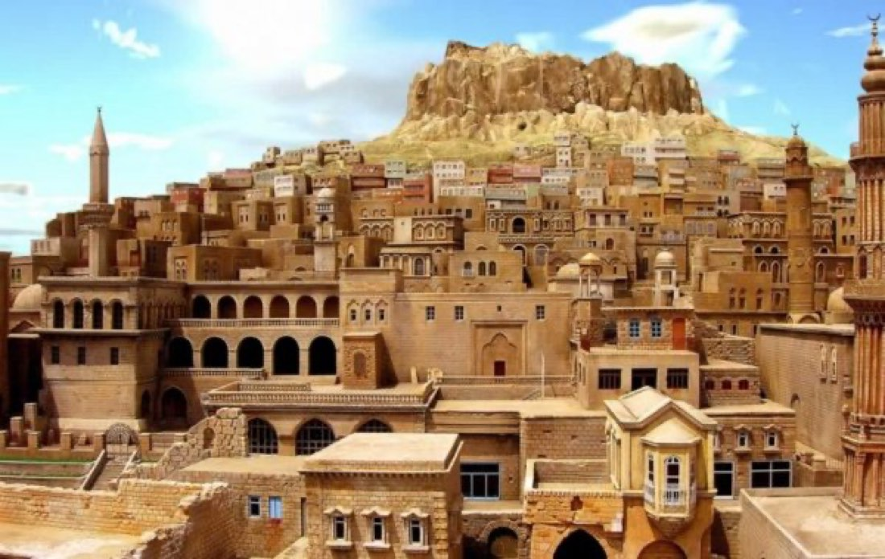
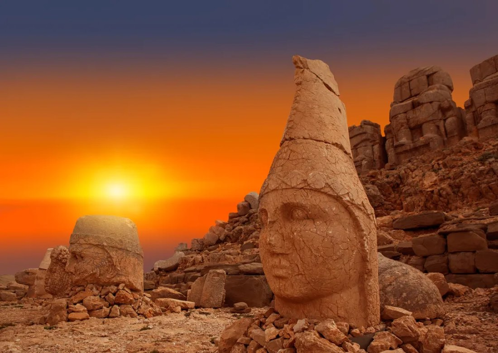
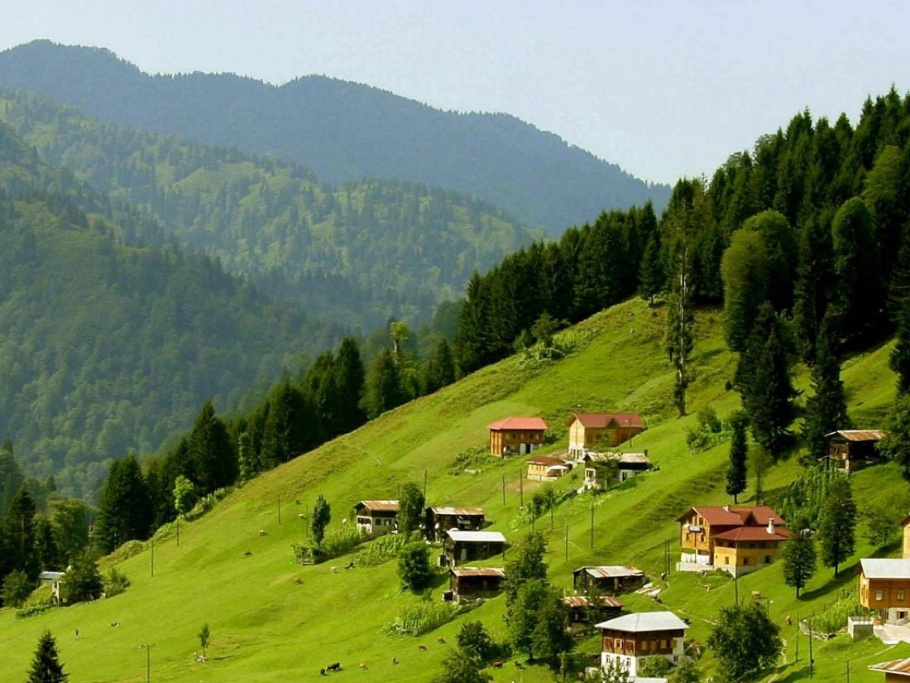

Yurtiçi TurlarÖnceki dönemUçaklı Gap Turu
Gaziantep, Rumkale, Şanlıurfa, Göbeklitepe, Mardin, Midyat, Eğil, Diyarbakır
Güncel tarih ve fiyatiçin arayın
İncele →Yurtiçi uçaklı turlar.

Yurtiçi TurlarÖnceki dönem
Yurtiçi TurlarÖnceki dönem
Yurtiçi TurlarÖnceki dönem